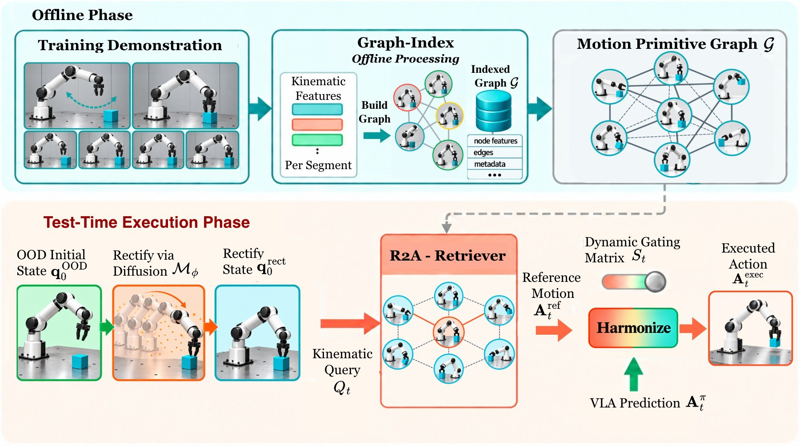
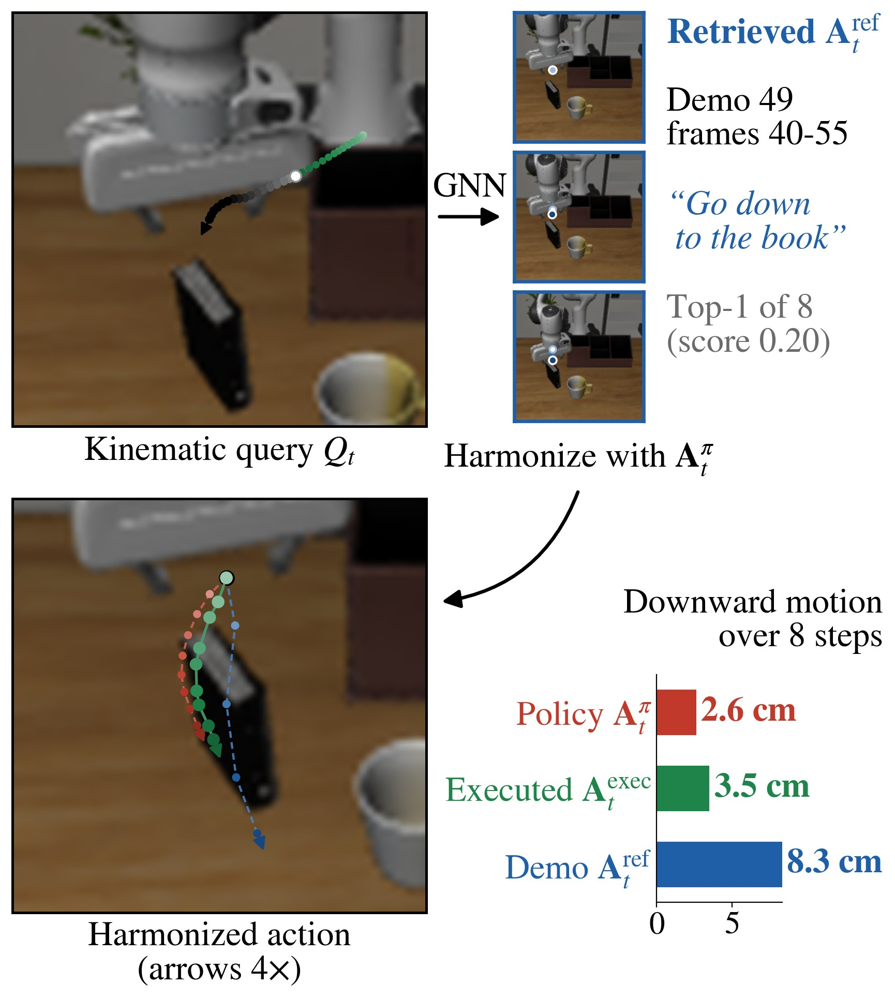
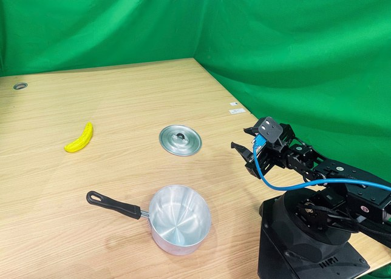
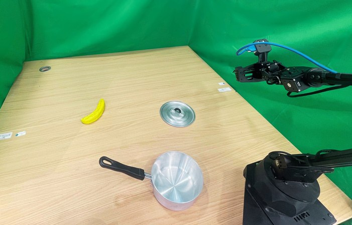

The policy knows what to do. Under a visual shift it forgets how to move.
VLA policies generalize across instructions, but small out-of-distribution (OOD) changes at execution time, such as a moved camera, a new texture or different lighting, push their actions off safe trajectories. Test-time methods that suppress these visual cues ignore the kinematic priors in the policy's own training data, which such shifts leave intact.
Retrieve to Act (R2A) turns successful training demonstrations into an offline motion primitive graph. At test time a query-conditioned GNN locates the rollout in the graph and retrieves compatible future motion, and a learned per-dimension gate blends it into the frozen VLA's actions. On GR00T N1.7, π0.5 and StableVLA it raises success on LIBERO-Plus, RoboTwin2.0-Plus and a real Aloha robot, with no finetuning.
Inside one rollout: query, messages, retrieval, harmonization
A logged rollout of GR00T N1.7 with R2A. Pick a shift: in each, GR00T alone fails. The teal cloud is the task's motion primitive graph, drawn into the camera. At each check the query forms at the gripper, messages travel the graph's edges, the top 8 segments light up with their logged scores, and the policy, retrieved and executed chunks appear.
All data shown is logged, with two exceptions. The message wave follows real edges outward from the nodes nearest the query, but per-layer activations were not logged. The gate bars are fitted from the logged chunks as the S in Aexec = Aπ + S ⊙ (Aref − Aπ).
Graph-Index
Each demo segment is a node. Temporal edges jump ahead within a demo (Δ = 2, 4, 6, 8). Spatial edges join nearby end-effector states across demos, including other tasks.
R2A-Retriever
The query combines the VLA's predicted poses with recent states and actions. Message passing conditioned on it spreads relevance along the graph. The future motion of the top-K nodes fuses into a reference chunk.
Harmonize
A per-dimension gate corrects the spatial pose where prediction and reference disagree. Gripper commands pass through. Before the first step, a diffusion model moves an OOD start pose back toward the training distribution.

One query, one retrieved primitive
GR00T N1.7 under Sensor Noise, step 32. The query retrieves demo 49, frames 40 to 55, a segment that goes down to the book. Over 8 steps the policy alone moves 2.6 cm down, the demo 8.3 cm, the harmonized action 3.5 cm. The gate moves the action toward the demo but does not replay it. Background shown clean.
LIBERO-Plus: seven perturbation categories, three base policies
Full Table 1 with all baselines
R2A improves all three policies on average, most under Robot Initial States: +49.1 for GR00T N1.7, +48.0 for StableVLA, +21.9 for π0.5.
Bimanual: RoboTwin2.0-Plus
On π0.5, R2A lifts the average from 56.8 to 66.2 and every category improves. Robot Initial States: 34.2 to 75.9.
Against other test-time OOD methods
LIBERO-10 averages. VLS uses VLM-generated rewards, SDN pushes away from negative references, ICL adds text descriptions of retrieved observations.
Full Table 3, per category
Aloha with GR00T N1.7, robot started from a shifted pose

Original
Perturbed| Task | Method | Base | Robot init. |
|---|---|---|---|
| Banana2Pot | GR00T N1.7 | 60.0 | 30.0 |
| + SDN | 75.0 | 55.0 | |
| + R2A | 80.0+20.0 | 80.0+50.0 | |
| Cube2Drawer | GR00T N1.7 | 55.0 | 10.0 |
| + SDN | 70.0 | 30.0 | |
| + R2A | 85.0+30.0 | 45.0+35.0 |
The shifted start breaks the base policy and SDN. R2A holds Banana2Pot at its in-distribution rate and lifts Cube2Drawer from 10 to 45. It also helps without a shift.
Ablation and inference time
Ablation, GR00T N1.7 on LIBERO-Plus
Without harmonization, replayed motion collapses to 1.2. ISR (initial state rectification) is measured on Robot Initial States only.
Inference time and success, LIBERO-10
Per-step inference time, GR00T N1.7. SDN needs detection and segmentation. VLS queries a VLM several times per step.
BibTeX
@inproceedings{r2a2027,
title = {Retrieve to Act: Motion Primitive Graph Retrieval for Robust {VLA} Execution},
author = {Anonymous},
booktitle = {Under review},
year = {2026}
}